Тестовое задание · Пиксель Плюс
Разбор сервиса ai.pixeltools.ru глазами нового пользователя: от регистрации до первых результатов. Цель — понять задачу пользователя, зафиксировать препятствия, расставить приоритеты и выбрать одно наиболее важное улучшение.
| Слой | Этап 0Awareness / вход | Этап 1Setup — промпты | Этап 2Registration / Auth | Этап 3First entry | Этап 4Paywall / сводка | Этап 5Payment 99 ₽ | Этап 6First run / лимиты | Этап 7Waiting | Этап 8First insight | Этап 9Competitors | Этап 10ИИ-помощник | Этап 11Audit / УТП | Этап 12Next / access |
|---|---|---|---|---|---|---|---|---|---|---|---|---|---|
| Stage | Awareness → Intent | Onboarding / Configuration | Account creation | First login / Orientation | Activation / Paywall | Conversion / Payment | First value attempt | Processing / Waiting | Aha / First insight | Analysis / Competitive framing | Guided interpretation | Synthesis / Audit | Retention / Collaboration |
| Job этапа | Понять, решает ли сервис задачу видимости бренда в ИИ, и запустить анализ для BEANABOX | Задать запросы, по которым потом смотреть видимость и репутацию | Сохранить проект и продолжить без потери данных | Вернуться к своему проекту и первой видимости бренда | Увидеть видимость, тональность и конкурентное окружение | Разблокировать данные и перейти к видимости бренда | Запустить сбор ответов нейросетей по своим промптам | Понять, когда можно действовать и можно ли уйти со страницы | Понять, видят ли нас ИИ и как говорят о бренде | Понять, с кем нас сравнивают нейросети, и отстроиться | Уточнить описание бренда/УТП и спросить про видимость | Сравнить бренд с правильными конкурентами по продуктам, ЦА, ценам, УТП | Понять «что дальше» и при необходимости отдать доступ коллеге |
| Actions | Открывает ai.pixeltools.ru; заполняет бренд и деятельность; выбирает нейросети; запускает анализ | Редактирует промпты; создаёт проект | OAuth Яндекс ID через Google; ожидание редиректа | Параллельно GEO-факторы, сводка, смежные вкладки | Открывает сводку; пытается работать с фильтрами | Уходит на tools.pixelplus.ru; пробует ЮMoney; оплачивает картой 99 ₽ | Нажимает «Обновить весь проект» | Смотрит прогресс ~48–51%, шапку отчёта, план шагов | Смотрит позиции/упоминания; читает тональность и ответы | Смотрит график; сверяет «конкурентов»; пытается сменить набор | Пишет вопрос про описание бренда; пытается пользоваться чатом | Выбирает конкурентов; генерирует аудит; пробует автогенерацию | Рекомендации; гостевые ссылки; добавление доступа; события |
| Touchpoints | Лендинг модуля; форма; CTA | Экран подобранных промптов; «Создать проект» | Passport Яндекса; Google account chooser | /geo-factors; навигация; сводка | Сводка; баннер демо; модалка 99 ₽ | card/bind; ЮMoney/ЮKassa; форма карты | Модалка лимитов (~34k) | Прогресс-бар; онбординг-план | Таблица позиций и упоминаний | Раздел конкурентов; барчарт | /assistant; footer | /audit; SWOT; степпер | Настройки доступа; события |
| Emotions | Интерес, готовность пробовать | Недооценивает вес шага («просто ключи») | Раздражение от длинной цепочки входа | Легко отвлекается от «моих результатов» | Ожидал инсайт — видит размытые данные | Готов платить; бесит нестабильный UI кошелька | Sticker shock по лимитам | Неопределённость, тревога закрыть вкладку | Интерес; нули без пояснения сбивают | Потеря доверия к нерелевантному набору | Ожидал переводчика данных — баг UI | Текст местами полезен, входной набор подрывает доверие | Collaboration неочевидна |
| Friction | Не очевидна важность описания бренда/деятельности как фундамента всех настроек проекта | Не объяснено, что промпты = база автоподбора конкурентов и всей аналитики → первая польза может быть «не про задачу» | Продукт → Яндекс → Google → обратно | «Энциклопедия GEO» вместо линии бренда в ИИ | Первая польза не выдана; шаг 1 плана = оплата | Кнопка ЮMoney пропала (частный случай); оплата картой; автосписания | Неясна цена первого ответа на Job | Нет ETA; нет «можно закрыть»; CTA опережает данные | «Что значит 0%?»; нет моста к действию | Не те конкуренты; нельзя задать своих | Footer поверх чата (возможен локальный баг; не first value) | Неясно «Оцените…»; автогенерация непрозрачна | «Пользователь не найден» без правила про регистрацию |
| Opportunity | Держать value prop в терминах бренда/репутации/УТП | Пресеты под видимость/репутацию/УТП; предупреждение перед create | Упростить вход; прогресс «сохраняем проект» | Deep-link в созданный проект после логина | First Look / preview до полного trial | Оплата — вне фокуса тестового; note в бэклоге | Safe defaults первого прогона | ETA, «можно закрыть», уведомления | Insight-слой + 1–2 CTA | Ручной/подтверждённый список конкурентов | Низкий приоритет; проверить на других браузерах | Аудит только по подтверждённым конкурентам | Invite-flow с копирайтом; явный next step |
| Скрин | 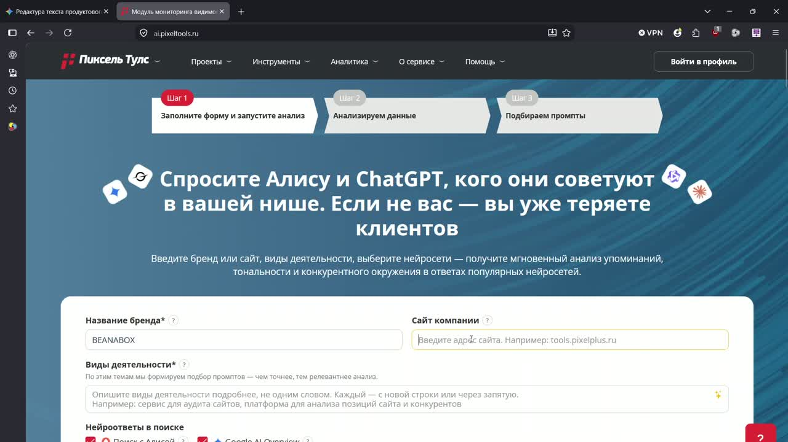 клик — увеличить |
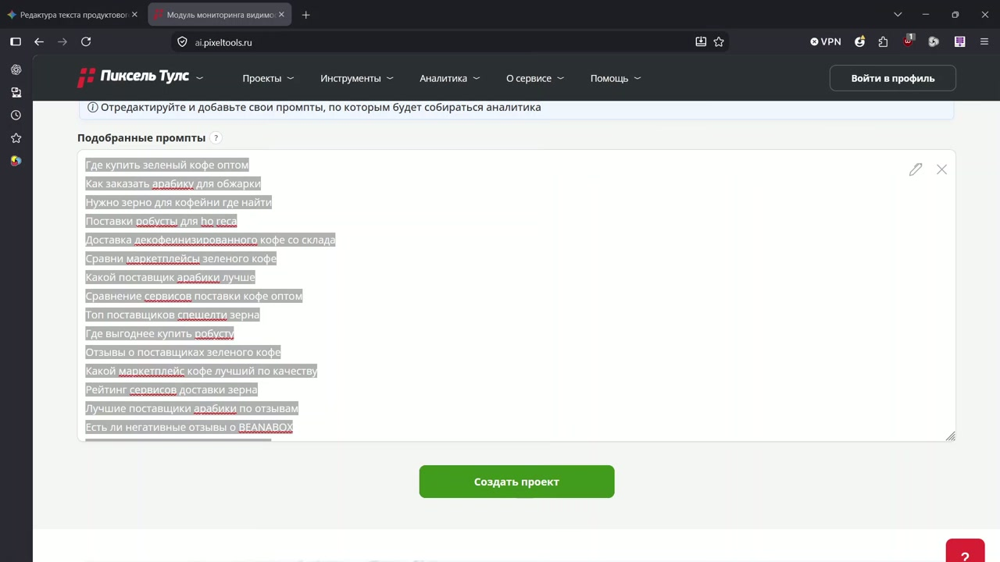 клик — увеличить |
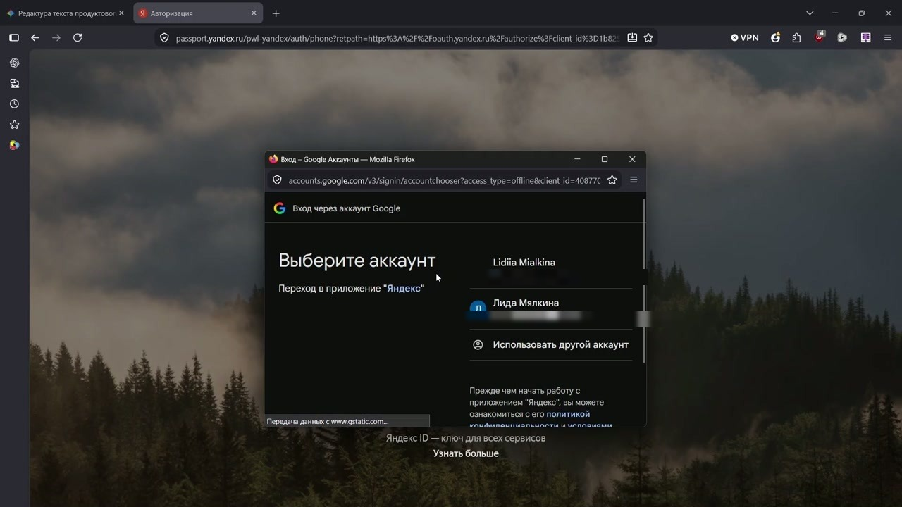 клик — увеличить |
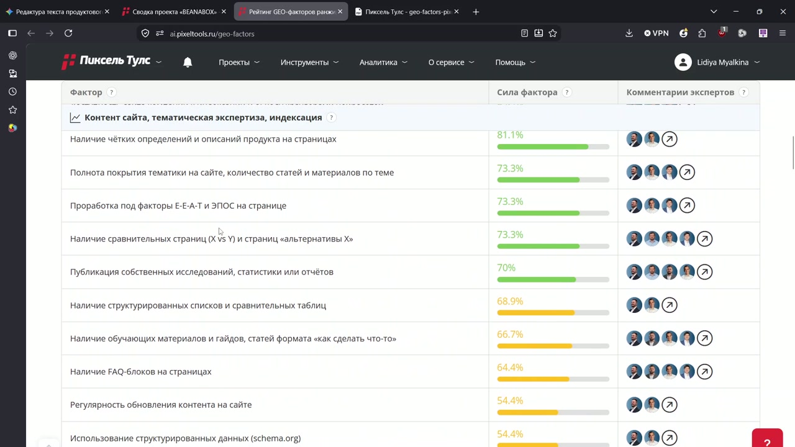 клик — увеличить |
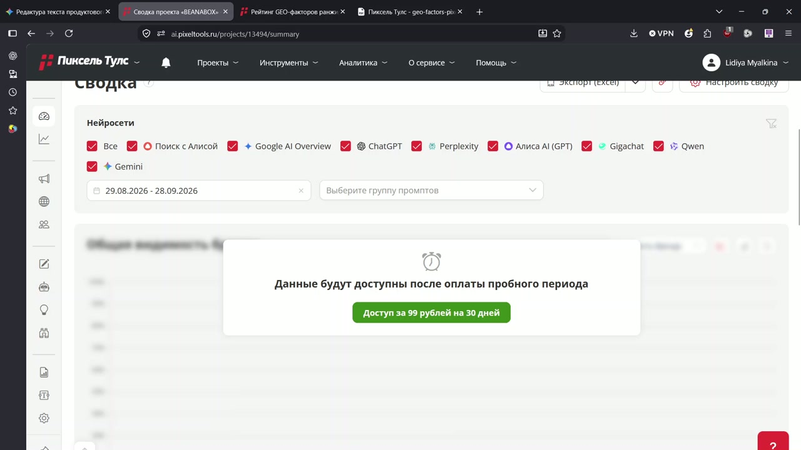 клик — увеличить |
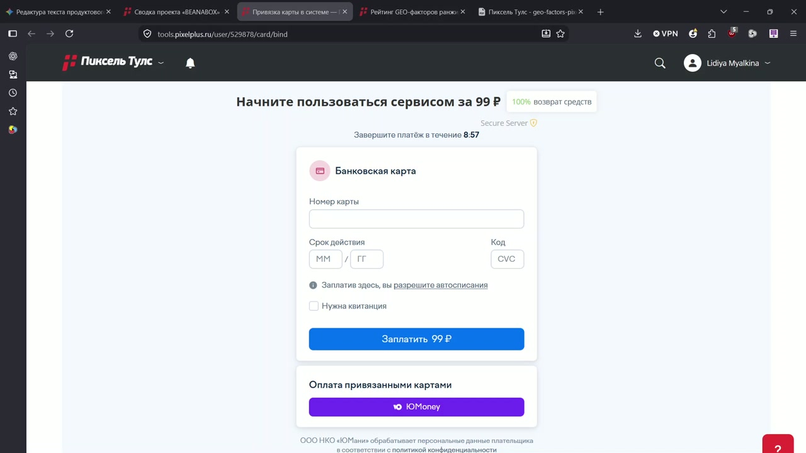 клик — увеличить |
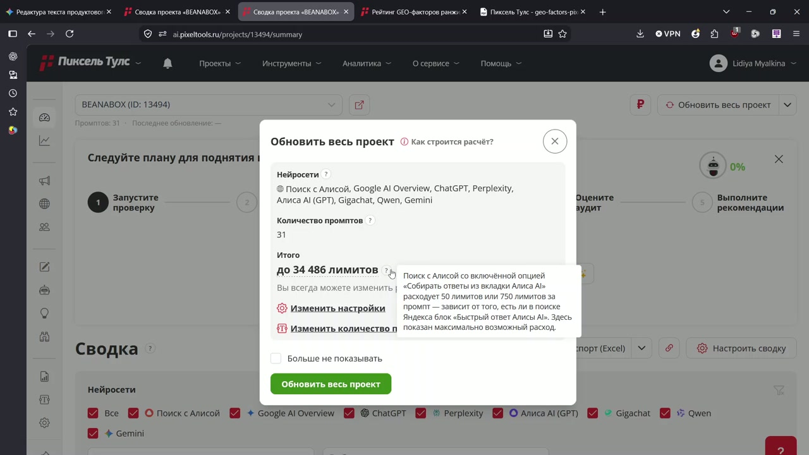 клик — увеличить |
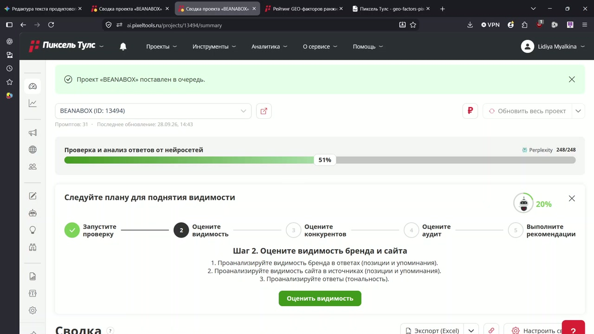 клик — увеличить |
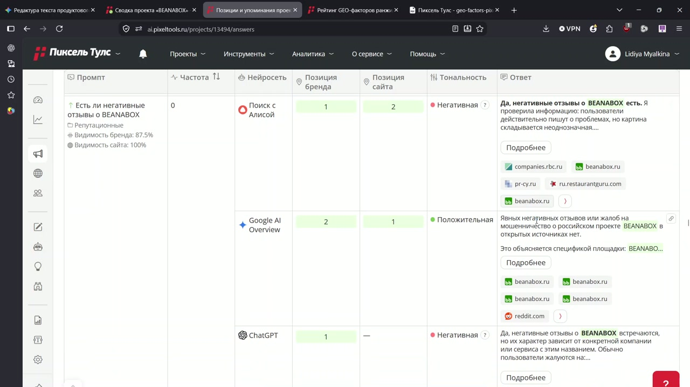 клик — увеличить |
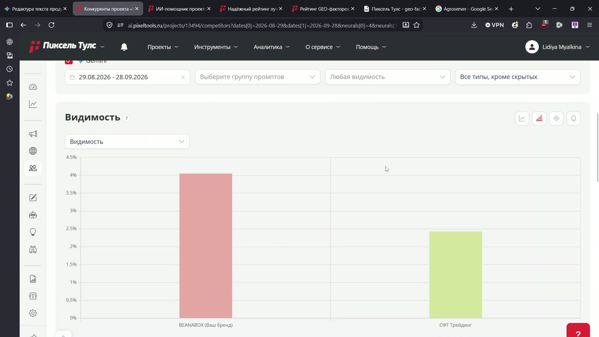 клик — увеличить |
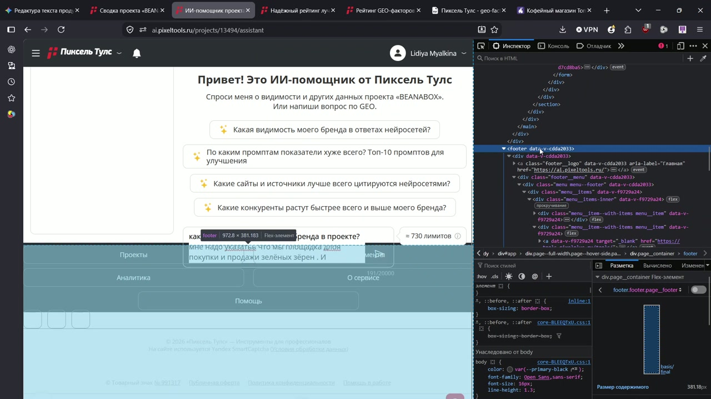 клик — увеличить |
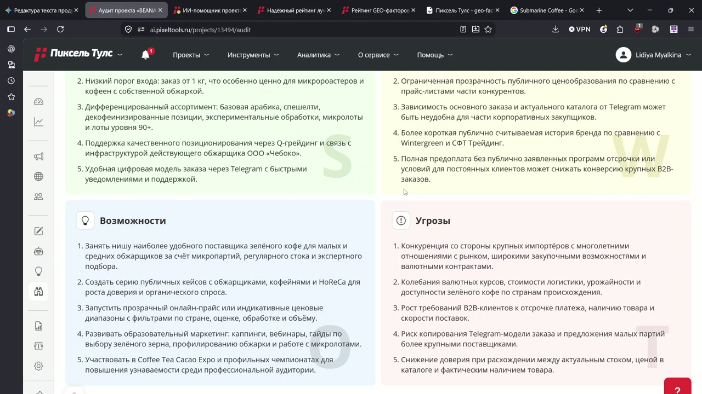 клик — увеличить |
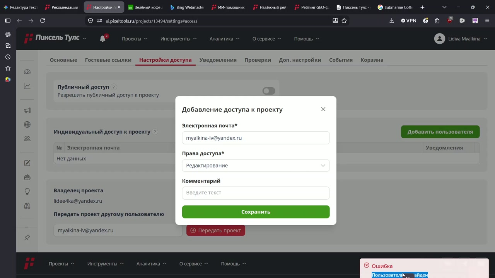 клик — увеличить |
| № | Название блокера что / где / когда |
Тип | Влияние на задачу пользователя Job этапа и связь с целью сессии |
R | I | C | E | RICE |
|---|---|---|---|---|---|---|---|---|
| 1 | Не объяснена цепочка «промпты → автоконкуренты/аналитика» на экране подобранных промптов перед «Создать проект» | Продукт · старт и качество данных | Этап 1 Job: задать запросы для видимости и репутации. Суть: пользователь правит или принимает промпты «на глаз», не видя цепи промпты → ответы нейросетей → видимость/тональность → автоподбор конкурентов → аудит/УТП. Ошибка на старте системно портит первую пользу по сквозным Jobs «конкуренты» и «УТП» |
9 | 3 | 0.90 | 2 | 12.2 |
| 2 | Нет ETA и правила «можно закрыть вкладку» на сводке проекта во время первого анализа | Продукт · ожидание | Этап 7 Job: понять, когда можно действовать. Откладывает aha по сквозному Job «видимость»; риск ухода до первой пользы | 9 | 2 | 0.90 | 1.5 | 10.8 |
| 3 | Нерелевантные конкуренты и нельзя задать своих в разделах конкурентов/аудита после первых данных | Продукт · качество данных | Этапы 9–11 Job: отстроиться и усилить УТП. Прямо бьёт по сквозным Jobs «отстройка» и «УТП»; часто следствие неверных промптов/описания на старте | 8 | 3 | 0.85 | 2 | 10.2 |
| 4 | Не очевидна роль описания бренда и видов деятельности как фундамента настроек на форме до создания проекта | Продукт · онбординг | Этап 0–1 Job: корректно задать контекст проекта до создания. Суть: поля выглядят как анкета, а не фундамент. От них зависят промпты, релевантность анализа и дальнейшие настройки. Неточное описание → первая польза по «видимости бренда» считается по неверной нише |
9 | 2.5 | 0.85 | 2 | 9.6 |
| 5 | Модалка «Обновить проект» предлагает до десятков тысяч лимитов в кабинете сразу после оплаты | Продукт · упаковка лимитов | Этап 6 Job: запустить сбор ответов. Пугает до первого замера видимости | 9 | 2.5 | 0.80 | 2 | 9.0 |
| 6 | Данные сводки закрыты модалкой paywall на /summary сразу после создания первого проекта | Продукт · монетизация | Этап 4 Job: увидеть видимость/тональность. Блокирует первую пользу до платежа. Для юрлиц paywall часто терпим, если уже видна ценность; здесь важен как препятствие на пути к результату, а не как тема оплаты сама по себе | 10 | 3 | 0.80 | 3 | 8.0 |
| 7 | План онбординга шумит текстом и опережает готовность данных на сводке во время ожидания/первых результатов | Продукт · онбординг | Этапы 6–8 Job: дождаться и прочитать видимость. Отвлекает от сквозного Job «видимость / репутация» | 8 | 1.5 | 0.80 | 1.5 | 6.4 |
| 8 | Метрики 0%/прочерки без интерпретации в «Позициях и упоминаниях» в момент первого aha | Продукт · слой инсайта | Этап 8 Job: понять, видят ли нас ИИ. Без интерпретации aha по «видимости» и «репутации» может не случиться | 8 | 2.5 | 0.70 | 5.6 | |
| 9 | Непрозрачные «Оцените…», автогенерация и шаги плана на /audit после первых данных | Продукт · UX шагов | Этап 11 Job: сравнить бренд и усилить УТП. Затрудняет план по сквозному Job «УТП» после первой пользы | 6 | 1 | 0.80 | 1 | 4.8 |
| 10 | Ошибка «пользователь не найден» в настройках доступа проекта при попытке добавить коллегу | Продукт · совместный доступ | Этап 12 Job: отдать доступ коллеге. Вне пути первой пользы | 4 | 1.5 | 0.90 | 1.5 | 3.6 |
| 11 | Мелкий текст про автосписания и countdown на экране оплаты 99 ₽ (card/bind) в момент платежа | Продукт · тексты доверия | Этап 5 Job: разблокировать данные. Второстепенен относительно пути к первой пользе; влияет на доверие в момент оплаты | 5 | 1 | 0.55 | 1 | 2.8 |
| 12 | Кнопка списания ЮMoney пропала на tools.pixelplus.ru/card/bind в момент оплаты trial 99 ₽ | Внешний сервис · платежи | Этап 5 Job: разблокировать данные. Суть: в прохождении кнопка кошелька пропала; оплата затем прошла картой. Частный случай, низкий приоритет относительно пути к первой пользе |
3 | 1.5 | 0.55 | 1 | 2.5 |
| 13 | Чат ИИ-помощника перекрыт footer на /assistant при уточнении бренда/УТП | Баг UI · локальный кейс | Этап 10 Job: уточнить описание бренда/УТП. Не на критическом пути к первой пользе. Возможно, особенность конкретного браузера; низкий охват и уверенность | 2 | 0.5 | 0.40 | 0.5 | 0.8 |
Шкалы: Reach — 1–10 (10 = все новые пользователи); Impact — 0.25–3 (3 = блокирует или системно искажает первую пользу); Confidence — 0.5–1.0; Effort — 0.5–5 (5 = максимальная сложность в person-weeks).
Пример расчёта блокера №1: Reach 9 (почти все пользователи проходят экран промптов) × Impact 3 (без понимания цепочки первая польза искажена) × Confidence 0.9 (наблюдение с экрана в одном прохождении; требует валидации на сегменте) / Effort 2 (полный to-be: цепочка, тексты, счётчик, состояния) = 12.2.
Effort и план Б: оценка 2 person-weeks — ориентир на полный объём to-be (4 шага, адаптив, новые стейты). Разработка часто пессимизирует сроки. Если визуальная цепочка не влезает в 1 спринт — ультра-MVP (Effort ≈ 0.5): только новый текст info-alert + предупреждение перед «Создать проект» (без схемы из 4 шагов и без новых состояний длинного списка). RICE при E=0.5 ≈ 48.6 — приоритет ещё выше, объём меньше.
Выбранное улучшение
RICE 12.2 · Reach 9 · Impact 3 · Confidence 0.90 · Effort 2 (план Б: E≈0.5)
На шаге Setup — промпты (этап 1) пользователь правит или принимает список запросов, не понимая, что эти промпты задают не только «что измерить», но и основу автоподбора конкурентов и всей последующей аналитики. Job этапа — задать запросы для видимости и репутации — формально выполняется, но без связи с последствиями шага.
Наблюдение На экране подобранных промптов перед «Создать проект» нет явного объяснения цепочки промпты → ответы нейросетей → видимость/тональность → автоконкуренты → аудит/УТП. Позже, уже после оплаты и ожидания, в разделе конкурентов появились нерелевантные бренды (маркетплейсы / не ниша BEANABOX), а задать своих конкурентов было нельзя.
Наблюдение Первая польза по отстройке и УТП приходит «кривой»: цифры и аудит считаются вокруг чужого конкурентного поля. Доверие к отчёту падает именно в момент, когда сервис должен доказать ценность.
Гипотеза Часть пользователей сегмента B2B (как PM BEANABOX) уйдёт или не продлит trial, решив, что продукт «не про их нишу», хотя корень — входные промпты, а не модель целиком.
Начинаем с этого, а не с других сильных блокеров, потому что:
После улучшения пользователь на экране промптов понимает последствия списка запросов и может скорректировать их под видимость / репутацию / нишу до Create.
Гипотеза для интервью PM / маркетолог нишевого B2B (как BEANABOX) на старте воспринимает промпты как «ключи для отчёта», а не как рамку конкурентного поля — и поэтому не инвестирует время в правку до Create.
Спросить у представителя сегмента:
Объяснить цепочку «промпты → автоконкуренты / аналитика» перед «Создать проект»
Пользователь: PM / маркетолог нишевого B2B-бренда (персона прохождения — PM BEANABOX).
Проблема: на экране подобранных промптов перед Create не видно, что список запросов задаёт не только сбор ответов нейросетей, но и автоподбор конкурентов и основу аудита УТП. Пользователь правит или принимает промпты «на глаз» и получает первую пользу по чужому конкурентному полю.
Сейчас (as-is): как на экране создания проекта — info-блок «Отредактируйте и добавьте свои промпты, по которым будет собираться аналитика», заголовок «Подобранные промпты» с «?», текстовый список промптов с переносом строк (✎ / ✕, ресайз), CTA «Создать проект», виджет помощи. Последствия списка для автоконкурентов и УТП не показаны.
После (to-be): тот же экран; список остаётся вертикальным (1 запрос = 1 строка) — так проще править и сверять; плюс пояснения до Create (см. ниже). В прототипе — переключатель as-is / to-be.
Входит (полный объём): пункты из «Что меняется в to-be»; состояния экрана выше; адаптив в рамках текущей вёрстки шага. Effort ≈ 2.
План Б (ультра-MVP, Effort ≈ 0.5): если визуальная цепочка и новые стейты не влезают в спринт — только новый текст info-alert + предупреждение перед «Создать проект». Схему из 4 шагов, счётчик и состояния длинного списка переносим на следующую итерацию.
Вне скоупа v1: пресеты под видимость/репутацию/УТП; ручные конкуренты на этом экране; AI-перегенерация списка; экран подтверждения конкурентов до Create; изменение алгоритма автоподбора; правки paywall / waiting / лимитов; импорт файла и интеграции с SEO/Ads.
Гипотеза на следующий discovery (не в это ТЗ): единый контур запросов с SEO/рекламой — импорт файла и синхронизация семантики, чтобы стратегия продвижения в ИИ не расходилась с другими каналами. Проверять отдельно после v1.
Качество (обязательный smoke): пользователь до Create видит и может пересказать связь «промпты → конкуренты/аналитика» (коридорный тест 5–7 человек сегмента нишевого B2B).
Бизнес-метрики (направление, без выдуманных baseline):
Прототип: 03_prototype_prompts_chain.html — переключатель «Сейчас / После», кликабельная «?», CTA с демо-тостом.
UI Kit: цвета --primary-btn #3d8b1a, alert info, логотип из комплекта. Откройте файл локально рядом с папкой _uikit.
Основной инструмент компиляции CJM, бэклога, ТЗ и кликабельного прототипа — Cursor (агент в IDE): разбор экранов прохождения, сборка HTML-отчёта и прототипа на токенах UI Kit Пиксель Плюс. Для сверки формулировок, шкалы RICE и полноты ответа на бриф дополнительно смотрела выводы DeepSeek и Gemini. На погружение в продукт (прохождение сценария в текущих продуктах) и сборку артефактов ушло около 4,5 часов. На текущем варианте остановилась осознанно: лимит времени на тестовое исчерпан; дальше логичны CustDev по гипотезе цепочки и уточнение открытых вопросов с командой продукта.
Ищу full-time вовлечение в один продукт. Удалённо (MSK / JST). Юридически комфортен формат НПД (самозанятость) на старте с перспективой перехода в штат. Нужен продакт, который сам соберёт кликабельный прототип до разработки? Напишите — покажу на вашей задаче. Готова к короткому тестовому